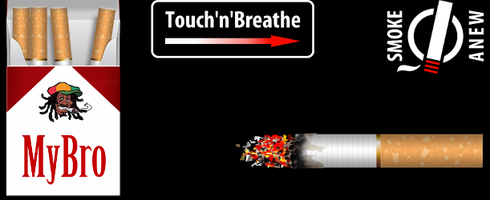

Smoking simulator for android. Game captures microphone input, measures average level and burns down cigarette or generates smoke particles.
Was written using openfl and haxe.
Native openfl extension for capturing microphone input was written using Java.